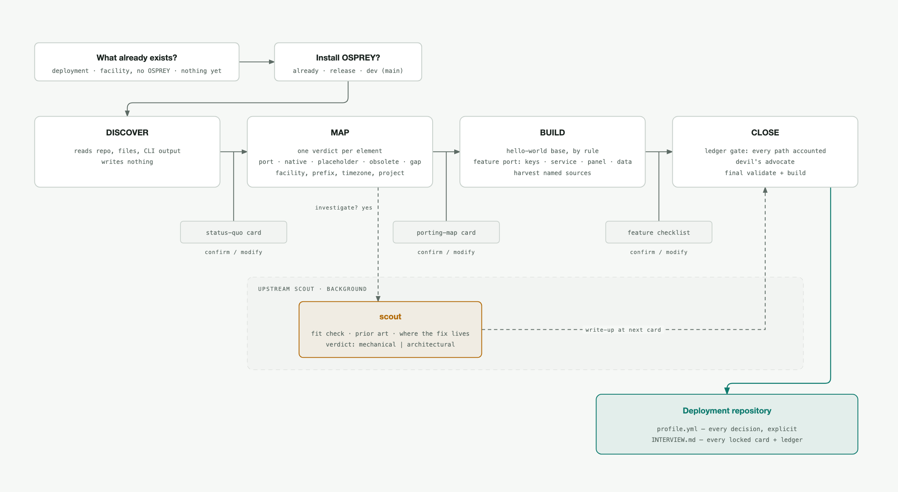
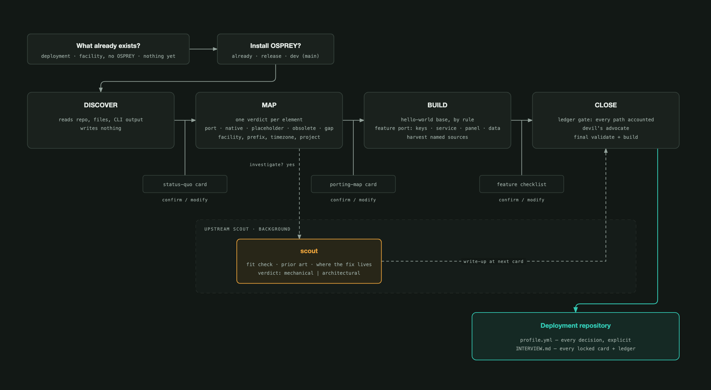

Install and Set Up#
The /osprey:install skill is OSPREY’s installer, run as a conversation with a
coding agent you bring — Claude Code in the commands below. That agent is not the
Osprey agent: the installer builds the deployment the Osprey agent later runs
from. It installs OSPREY if it is missing, starts from what you already
have, agrees each step with you, and ends on a deployment repository for your
accelerator, beamline, or detector that validates and builds. You can stop and
resume at any point.
Prerequisites
A coding-agent CLI — the installer runs inside a coding-agent session; the commands here use Claude Code. Install it from claude.ai/code and make sure
claude --versionworks in your terminal.uv — the installer puts OSPREY on your
PATHwithuv tool install. Installation & Setup covers installinguv; OSPREY itself can wait for the conversation.A provider API key — the installer is a live conversation with an AI service, usually whichever one your lab provides.
Recommended: a container runtime (Docker or Podman) so that
osprey upworks on the result, and a list of your channel names if you have one.
Install the skill#
The skill ships in the osprey plugin:
# skip-ci
claude plugin marketplace add als-apg/osprey --sparse .claude-plugin plugins
claude plugin install osprey@osprey
How to update the plugin or run it from a checkout is on Agent Skills.
Run it#
# skip-ci
mkdir -p ~/my-osprey-project
cd ~/my-osprey-project
claude
In the agent session, type:
/osprey:install
What happens#
{kind=link}

Two questions, four phases, a card to confirm at the end of each. The upstream scout runs beside the conversation, not in it.#
{kind=link}

Two questions, four phases, a card to confirm at the end of each. The upstream scout runs beside the conversation, not in it.#
It opens with two questions: what already exists (an OSPREY deployment, a facility
without one, or nothing yet), and whether OSPREY is installed on this machine. If it
is not, you choose the latest release or the development version from main, and
the installer runs the install for you.
Then four phases, each ending on a card and one question: confirm, or say what should
change. A confirmed card is written into INTERVIEW.md and is not reopened.
DISCOVER reads your repository, files and command output, writes nothing, and shows a status-quo card: what is there now, grouped into boxes. Anything that still describes OSPREY’s reference facility rather than yours is marked as such.
MAP gives every element one verdict: carry it over, use what OSPREY has, replace a reference-facility placeholder with your own, drop it, or flag a gap OSPREY cannot express. Then it asks for the facility name, prefix, timezone and project name.
BUILD creates the project from the hello-world preset and shows a feature checklist: every optional feature of the full reference example, recommended on whenever your facility has the source it consumes. A logbook means the ARIEL logbook search is recommended on, with your logbook ingested. Documentation, an IOC database or a channel list mean the knowledge bundle, the facility graph and the graph channel finder are recommended on, seeded from those sources when you say so. Each adopted feature enters the profile through the same fixed sequence, and every file that lands gets a row in a provenance ledger.
CLOSE checks the ledger against the file tree and blocks until every path names your facility, a skeleton, or a reason; then a second agent argues against the setup; then a final validate and build.
When the conversation hits something OSPREY cannot express for your facility, the installer offers to investigate it in the background while you continue. The result comes back as a write-up with a verdict, mechanical or architectural, and a recommendation: fix it on a branch and build your deployment against that branch, or file an issue with the OSPREY team. Nothing is sent without you seeing it.
To resume, open the repository and run /osprey:install again. It continues
after the last confirmed card.
Migrating an existing project is the same conversation. Answer “an OSPREY
deployment already exists” and DISCOVER inventories it, whatever its generation.
The porting map is your migration plan. Files that carry over are copied
unchanged, and custom code that needs real work is recorded in INTERVIEW.md
as work to do rather than attempted mid-conversation.
Tips#
If you’re not sure about a question, say “I’m not sure”. It picks a safe default and records that it did.
Ask to see the assistant running whenever you’re curious. You can ask for a build at any pause.
Build and run#
The installer leaves you inside a deployment repository:
# skip-ci
cd my-project
osprey build # render build/ from the profile
osprey web # web dashboard on your own machine
Or talk to the agent directly with osprey chat. Adjust anything later by
editing profile.yml (every key carries its own explanation) and running
osprey build again.
Deploy it#
Deployment coordinates go in the profile under a deploy: block: the CI
platform, the deploy host, and the container registry if that host pulls its
images. A fresh profile ships this block commented out. Credentials are named
there, never written there. Then:
# skip-ci
osprey scaffold ci # CI pipeline + post-deploy health check script
osprey up -d # start it
osprey status # what is running, where it answers, which build it is
See Deploy a Facility for a worked example from an empty directory to running containers, and Build Profiles for the full build profile reference.